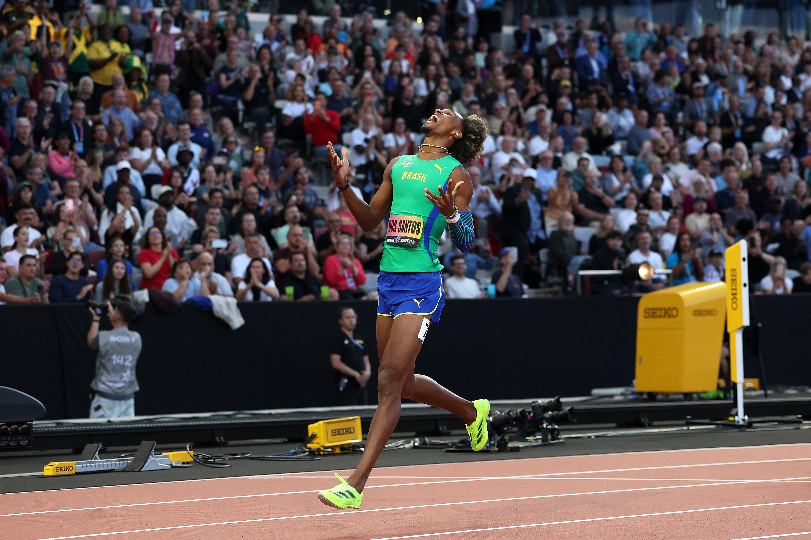

O World Athletics Ultimate Championship estreou neste final de semana, entre 11 e 13 de setembro de 2026, com uma proposta diferente dos grandes campeonatos tradicionais do atletismo. Em vez de uma programação extensa, com classificatórias distribuídas por vários dias, o evento realizado em Budapeste, na Hungria, concentrou 28 finais em três sessões noturnas e colocou frente a frente campeões olímpicos, campeões mundiais, vencedores da Diamond League e alguns dos atletas de melhor desempenho da temporada.
A lista final de inscritos teve 381 atletas de 65 federações. O programa foi formado por 26 provas individuais e dois revezamentos mistos, com semifinais apenas nas corridas de até 800 metros. Os 1500 m, 5000 m, revezamentos e todas as provas de campo foram disputados diretamente em finais. A organização ainda adotou uma apresentação visual própria, com área interna da pista em preto, entrevistas dentro do estádio e uma estrutura pensada para transformar cada sessão em um espetáculo compacto de aproximadamente três horas.
O tamanho esportivo também veio acompanhado de uma premiação inédita. A World Athletics colocou US$ 10 milhões em disputa, com US$ 150 mil para cada campeão individual. Outra mudança simbólica foi a ausência das medalhas tradicionais: os vencedores receberam troféus criados especificamente para o Ultimate Championship.
Mas o que fez a primeira edição ganhar peso não foi apenas o formato. Budapeste entregou marcas de altíssimo nível, vitórias inesperadas e alguns confrontos que poderiam perfeitamente estar em uma final olímpica ou mundial.
Velocistas dominaram parte das grandes histórias
Dois atletas deixaram Budapeste com uma dobradinha especialmente valiosa. Kenny Bednarek conquistou os 100m masculinos e depois confirmou o domínio nos 200m. No feminino, Melissa Jefferson-Wooden fez movimento semelhante: ganhou os 100m e voltou à pista para vencer os 200m em impressionantes 21.47s.
O 21.47 de Jefferson-Wooden entrou entre as performances mais rápidas já registradas na prova feminina. Mais importante para a lógica do Ultimate, a norte-americana conseguiu vencer uma final que reuniu nomes de enorme peso, incluindo Gabby Thomas.
Nas provas mais longas, também houve resultados relevantes. Jakob Ingebrigtsen venceu os 5000m masculinos, enquanto Josh Kerr levou os 1500m. Nos 800m, Djamel Sedjati superou um campo fortíssimo. Entre as mulheres, Audrey Werro ganhou os 800m em 1:55.88, à frente de Keely Hodgkinson, enquanto Likina Amebaw ficou com o título dos 5000 m.
Píu vence o Ultimate após temporada histórica
O título de Alison dos Santos nos 400m com barreiras ganhou ainda mais peso pelo caminho construído ao longo de 2026. O brasileiro chegou a Budapeste não apenas como candidato à vitória, mas como o principal nome da temporada na prova: vinha de triunfos importantes na Diamond League, havia conquistado o título do circuito e, semanas antes do Ultimate Championship, quebrado o recorde mundial.
A trajetória de Alison em 2026
- Xiamen — vitória na Diamond League com 46.72, superando Karsten Warholm, segundo colocado com 46.82.
- Estocolmo — nova vitória, desta vez com 47.11. Matheus Lima completou a dobradinha brasileira ao terminar em segundo.
- Oslo — Alison voltou a derrotar Warholm e venceu em 46.89, mantendo o brasileiro entre os principais nomes do circuito.
- Silésia — correu em 46.43 e estabeleceu naquele momento a melhor marca mundial da temporada. Warholm terminou logo atrás, com 46.52.
- Zurique — quatro dias depois, veio a corrida que mudou o patamar da temporada que já era histórica. Alison marcou 45.80 e quebrou o recorde mundial dos 400m com barreiras. A marca anterior, de 45.94, pertencia a Warholm desde os Jogos Olímpicos de Tóquio.
- Final da Diamond League em Bruxelas — Alison venceu em 46.70, conquistou o título da temporada e ainda estabeleceu o recorde do meeting. Foi seu terceiro título de Final da Diamond League.
- Ultimate Championship — encerrou a sequência com mais uma vitória correndo em 45.98 na final em Budapeste.
O duelo que colocou os três gigantes frente a frente
O contexto tornava a final do Ultimate Championship uma das provas mais aguardadas de todo o evento. Alison enfrentava justamente os dois atletas que, ao lado dele, ajudaram a elevar os 400m com barreiras a um nível histórico nos últimos anos.
Rai Benjamin chegou à decisão como campeão olímpico e mundial. Karsten Warholm era o antigo recordista mundial e um dos principais rivais do brasileiro durante a temporada. Alison, por sua vez, desembarcou na Hungria como recordista mundial e campeão da Diamond League.
Na semifinal, o brasileiro já havia dado um sinal de força ao vencer sua bateria em 47.25, com Benjamin logo atrás, em 47.49.
Na decisão, Alison elevou novamente o nível. O brasileiro ganhou terreno na parte decisiva da corrida, sustentou a vantagem depois da última barreira e cruzou a linha em 45.98.
Pódio dos 400m com barreiras no Ultimate Championship:
- 1º Alison dos Santos, Brasil — 45.98
- 2º Rai Benjamin, Estados Unidos — 46.40
- 3º Karsten Warholm, Noruega — 46.78
Matheus Lima, o outro brasileiro presente na final, terminou na sétima colocação, com 48.67.
Veja abaixo a prova:
Uma sequência que explica o título
O 45.98 registrado em Budapeste foi a terceira performance mais rápida da história dos 400m com barreiras. Mais importante do que olhar apenas para o cronômetro, porém, é observar a sequência que Alison construiu antes de conquistar o Ultimate Championship.
Em um espaço relativamente curto da temporada, o brasileiro passou por 46.43 na Silésia, estabeleceu o recorde mundial de 45.80 em Zurique, conquistou a Final da Diamond League em Bruxelas e depois venceu Benjamin e Warholm em Budapeste.
Assim, o título do Ultimate Championship não surgiu como um resultado isolado. Ele funcionou como o fechamento de uma temporada em que combinou regularidade, vitórias contra os maiores rivais da modalidade, título da Diamond League e recorde mundial.
Budapeste acrescentou mais um elemento a esse currículo: Alison tornou-se o primeiro campeão masculino dos 400m com barreiras da história do Ultimate Championship.
Confirmação de favoritismo e uma das grandes surpresas
No salto com vara masculino, Mondo Duplantis voltou a mostrar por que ocupa uma posição tão particular no atletismo contemporâneo. O sueco venceu com 6.20 m. Emmanouil Karalis ainda colocou pressão ao superar 6.15 m, enquanto Sondre Guttormsen ficou em terceiro com 5.95 m. Depois de assegurar a vitória, Duplantis ainda tentou 6.32 m, mas não conseguiu superar a altura.
Se o salto com vara teve um vencedor esperado, o lançamento do martelo produziu um roteiro bem diferente. Merlin Hummel abriu a competição com 81.46m e manteve a liderança até o fim. Ethan Katzberg, campeão olímpico e mundial, não conseguiu registrar um lançamento válido.
Outro resultado marcante nas provas de campo foi o triunfo de Rumesh Pathirage no lançamento do dardo masculino. O atleta do Sri Lanka alcançou 91.09m e superou Anderson Peters e Julian Weber. Já Gianmarco
Marcas históricas do Ultimate Championship
A primeira edição não teve quebra de recorde mundial, mas produziu uma série de recordes nacionais e marcas históricas que reforçaram o nível técnico do evento.
- 400m masculino — Collen Kebinatshipi venceu com 43.39, melhorou o próprio recorde nacional de Botsuana e passou a ocupar o quinto lugar na lista mundial de todos os tempos da prova.
- Lançamento do dardo feminino — Haruka Kitaguchi conquistou o título com 68.92m e estabeleceu um novo recorde japonês.
- 400m com barreiras masculino — além da vitória de Alison dos Santos em 45.98, Emil Agyekum terminou na quarta colocação com 47.10 e estabeleceu o recorde da Alemanha.
- 800m masculino — Djamel Sedjati venceu em 1:41.91 e estabeleceu o recorde all-comers da Hungria, a melhor marca já registrada no país para a prova.
- 1500m masculino — Josh Kerr venceu em 3:29.35 e também melhorou o recorde all-comers da Hungria. O britânico já possuía a marca anterior, de 3:29.38, registrada no Mundial de Budapeste de 2023.
O 4x100 m misto também passou muito perto de produzir um recorde mundial. Os Estados Unidos venceram em 39.64, apenas dois centésimos acima dos 39.62 que pertencem à Jamaica.
Todos os resultados do Ultimate Championship 2026
Resultados femininos:
100m
- 1º Melissa Jefferson-Wooden, Estados Unidos — 10.62
- 2º Julien Alfred, Santa Lúcia — 10.74
- 3º Sha'Carri Richardson, Estados Unidos — 10.76
200m
- 1º Melissa Jefferson-Wooden, Estados Unidos — 21.47
- 2º Gabby Thomas, Estados Unidos — 21.77
- 3º Kayla White, Estados Unidos — 21.93
400m
- 1º Marileidy Paulino, República Dominicana — 49.07
- 2º Henriette Jæger, Noruega — 49.28
- 3º Nickisha Pryce, Jamaica — 49.56
800m
- 1º Audrey Werro, Suíça — 1:55.88
- 2º Keely Hodgkinson, Grã-Bretanha — 1:56.26
- 3º Femke Broeders-Bol, Países Baixos — 1:56.74
1500m
- 1º Klaudia Kazimierska, Polônia — 3:57.55
- 2º Georgia Hunter Bell, Grã-Bretanha — 3:57.72
- 3º Nikki Hiltz, Estados Unidos — 3:58.16
5000m
- 1º Likina Amebaw, Etiópia — 14:30.36
- 2º Jessica Hull, Austrália — 14:32.39
- 3º Fantaye Belayneh, Etiópia — 14:32.62
100m com barreiras
- 1º Masai Russell, Estados Unidos — 12.22
- 2º Tobi Amusan, Nigéria — 12.34
- 3º Nadine Visser, Países Baixos — 12.39
400m com barreiras
- 1º Jasmine Jones, Estados Unidos — 52.45
- 2º Emma Zapletalová, Eslováquia — 52.68
- 3º Anna Cockrell, Estados Unidos — 53.09
Salto em altura
- 1º Yaroslava Mahuchikh, Ucrânia — 1.99m
- 2º Nicola Olyslagers, Austrália — 1.95m
- 3º Eleanor Patterson, Austrália — 1.91m
- 3º Angelina Topić, Sérvia — 1.91m
Salto com vara
- 1º Sandi Morris, Estados Unidos — 4.90m
- 2º Hana Moll, Estados Unidos — 4.90m
- 3º Angelica Moser, Suíça — 4.85m
Salto em distância
- 1º Larissa Iapichino, Itália — 6.90m
- 2º Jazmin Sawyers, Grã-Bretanha — 6.78m
- 3º Alyssa Jones, Estados Unidos — 6.77m
Salto triplo
- 1º Saly Sarr, Senegal — 15.06m
- 2º Davisleydi Velazco, Cuba — 15.04m
- 3º Leyanis Pérez Hernández, Cuba — 14.90m
Lançamento do dardo
- 1º Haruka Kitaguchi, Japão — 68.92m
- 2º Ziyi Yan, China — 68.05m
- 3º Flor Denis Ruiz Hurtado, Colômbia — 64.84m
Resultados masculinos:
100m
- 1º Kenny Bednarek, Estados Unidos — 9.85
- 2º Oblique Seville, Jamaica — 9.90
- 3º Ronnie Baker, Estados Unidos — 9.93
200m
- 1º Kenny Bednarek, Estados Unidos — 19.52
- 2º Letsile Tebogo, Botsuana — 19.76
- 3º Courtney Lindsey, Estados Unidos — 19.79
400m
- 1º Busang Collen Kebinatshipi, Botsuana — 43.39
- 2º Rai Benjamin, Estados Unidos — 44.15
- 3º Jereem Richards, Trinidad e Tobago — 44.23
800m
- 1º Djamel Sedjati, Argélia — 1:41.91
- 2º Marco Arop, Canadá — 1:42.28
- 3º Emmanuel Wanyonyi, Quênia — 1:42.44
1500m
- 1º Josh Kerr, Grã-Bretanha — 3:29.35
- 2º Cameron Myers, Austrália — 3:29.68
- 3º Hobbs Kessler, Estados Unidos — 3:30.73
5000m
- 1º Jakob Ingebrigtsen, Noruega — 12:59.24
- 2º Cole Hocker, Estados Unidos — 13:00.05
- 3º Parker Wolfe, Estados Unidos — 13:00.13
110m com barreiras
- 1º Ja'Kobe Tharp, Estados Unidos — 12.94
- 2º Cordell Tinch, Estados Unidos — 12.95
- 3º Bradley Franklin, Estados Unidos — 13.01
400m com barreiras
- 1º Alison dos Santos, Brasil — 45.98
- 2º Rai Benjamin, Estados Unidos — 46.40
- 3º Karsten Warholm, Noruega — 46.78
Salto em altura
- 1º Gianmarco Tamberi, Itália — 2.37m
- 2º JuVaughn Harrison, Estados Unidos — 2.30m
- 3º Erick Portillo, México — 2.26m
Salto com vara
- 1º Mondo Duplantis, Suécia — 6.20m
- 2º Emmanouil Karalis, Grécia — 6.15m
- 3º Sondre Guttormsen, Noruega — 5.95m
Salto em distância
- 1º Miltiadis Tentoglou, Grécia — 8.35m
- 2º Bozhidar Saraboyukov, Bulgária — 8.34m
- 3º Simon Ehammer, Suíça — 8.07m
Lançamento do martelo
- 1º Merlin Hummel, Alemanha — 81.46m
- 2º Bence Halász, Hungria — 80.30m
- 3º Mykhaylo Kokhan, Ucrânia — 78.90m
Lançamento do dardo
- 1º Rumesh Pathirage, Sri Lanka — 91.09m
- 2º Anderson Peters, Granada — 86.18m
- 3º Julian Weber, Alemanha — 85.89m
Revezamentos mistos
4x100m misto
- 1º Estados Unidos — 39.64
- 2º Jamaica — 39.72
- 3º Grã-Bretanha e Irlanda do Norte — 40.26
4x400m misto
- 1º Estados Unidos — 3:08.32
- 2º Grã-Bretanha e Irlanda do Norte — 3:09.40
- 3º Países Baixos — 3:09.57
O que a primeira edição deixou para o atletismo
O Ultimate Championship nasceu tentando ocupar um espaço diferente no calendário. Não se trata de substituir Jogos Olímpicos ou Mundial, mas de criar um terceiro tipo de grande confronto internacional: mais curto, seletivo, financeiramente valioso e construído para colocar os melhores frente a frente com menos etapas intermediárias.
O evento também funcionou, na prática, como o grande encerramento da temporada internacional de pista da elite em 2026. A Diamond League já havia realizado sua final, em Bruxelas, e o Ultimate Championship concentrou em Budapeste alguns dos principais nomes do ano para um último confronto de alto nível. O calendário da World Athletics ainda reserva provas de rua, cross country e outras competições internacionais, incluindo o Mundial de Corrida de Rua, mas o principal ciclo das grandes provas de pista chegou ao fim na Hungria.
Essa posição no calendário ajudou a dar ao Ultimate um significado adicional. Mais do que uma competição isolada, Budapeste virou uma espécie de prova final da temporada: oportunidade para campeões olímpicos, mundiais e da Diamond League fecharem o ano frente a frente, enquanto atletas como Alison dos Santos buscavam transformar uma temporada de grandes resultados em um último título.
Budapeste, portanto, não ficou marcada apenas como a cidade que recebeu a primeira edição. O evento de 2026 estabeleceu a referência inicial de uma competição criada para coroar campeões em confrontos diretos e com campos altamente seletivos. Se o Ultimate Championship buscava construir uma identidade própria dentro do atletismo internacional, sua estreia entregou material suficiente para isso: grandes marcas, favoritos confirmando força, zebras importantes, recordes nacionais e uma coleção de finais de alto nível para fechar a temporada de pista da elite mundial.